en ru
victorst
Robosonic EX - шасси для мозговых экспериментов
Суть - цилиндрический наподобие робопылесосов, но повыше. Внутри Mini-ITX мамка, ноутбучный HDD или флешка, самодельная плата контроллера периферии на ATMega, подключенная на COM порт мамки. Аккумулятор (один или более 7A 12в - обычные от UPS). Пара моторчиков для колес. Ну и датчиков набор. Камера USB. Позже чтобы можно было манипуляторы типа рук можно было установить. Короче - обычная круглая стиральная машина высотой меньше метра с кепкой. Возможно, кому-то будет интересно сделать аналогичный, если у меня что-то путнее с мозгами робота получится. А сама тушка робота идейно тривиальна. Но ее делать нано и нуно. Так мне кааца. (Шутка). Если кто-то поделится ссылками на аналогичное, буду признателен.
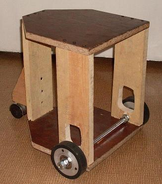
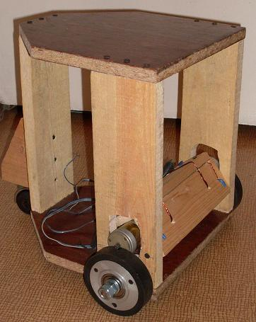
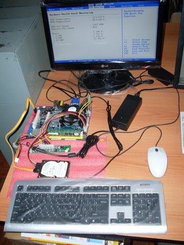
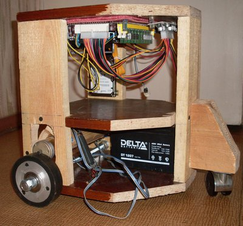
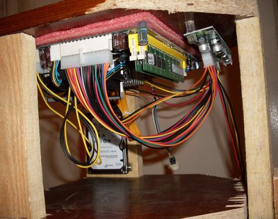
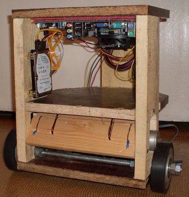
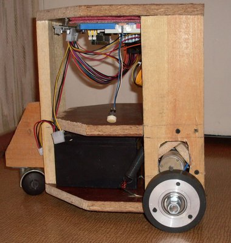
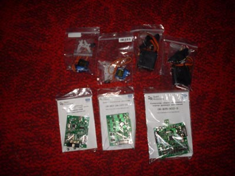
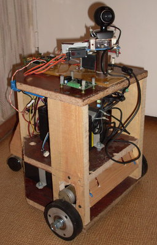
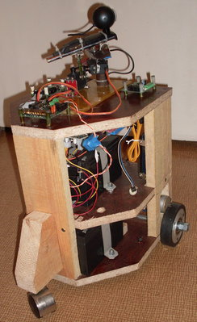
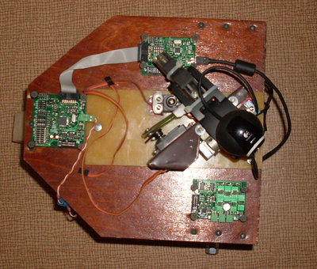
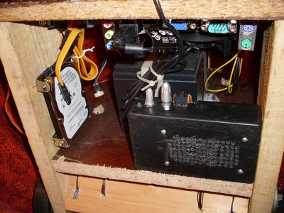
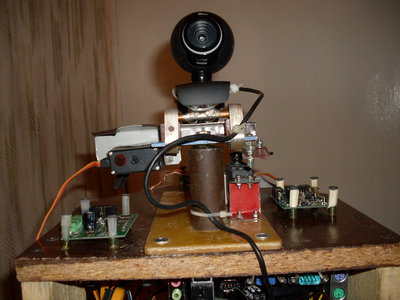
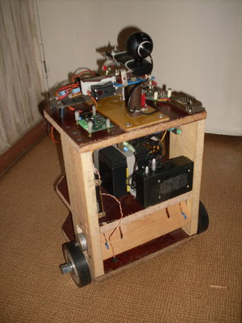
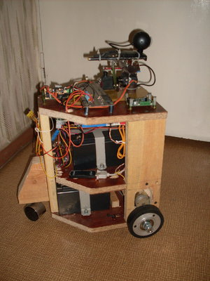
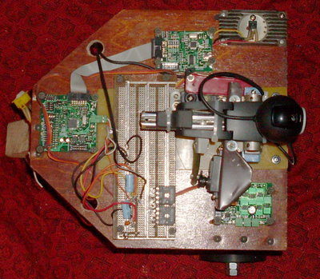
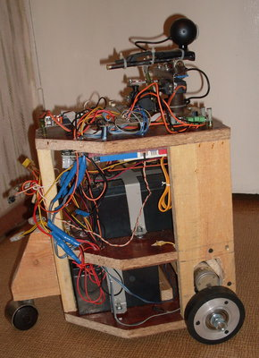
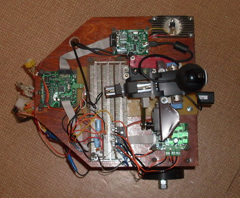
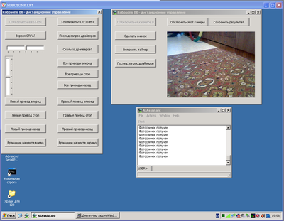
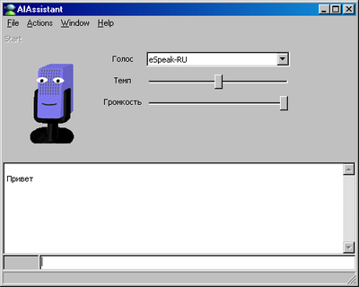
Я продолжаю разрабатывать программу AIAssistant, основанную на языке CLIPS. Решил расширить ее возможности с пом. исследований, проводимых на экспериментальной робототехнической платформе Robosonic EX. Чисто по технической составляющей я кое-что пишу здесь http://roboforum.ru/viewtopic.php?f=10&t=7004 http://www.youtube.com/watch?v=ZJtYqr75L1Q - это первое испытание системы под управлением моей программы. Хочу оснастить робота системой представления о мире на основе онтологии SUMO. А также синтезатором 3D модели мира, соединив конкретное и абстрактное мышление. Здесь хотел бы пообсуждать "мозговые" особенности этого робота, если кому-то на данном форуме будет это интересно.
На первом испытании я сидел за компом и нажимал на кнопки формы в программе AIAssistant. В конце темы на робофоруме, http://roboforum.ru/viewtopic.php?f=10&t=7004&start=240#p141961, я определил очередной тест, кот. по сути дела является частью последовательного процесса создания элементов личности робота, начиная с самого простейшего автономного поведения. Дело в том, что нужно решать одновременно много задач разного уровня. Например, интергрировать в систему, основанную на правилах синтез речи и обработку зрительной информации. Недавно я намучился над конвертацией SUMO в набор объектов и правил языка CLIPS. и т.д. На том же робофоруме я в нескольких темах про модули RoboBrain написал, что и как планирую реализовать.
О себе - запросто. Если кому-то интересно. Живу в г. Омск в Сибири. Возраст 49 лет. В 1983 г. окончил Омский Политехнический институт по специальности "Электронные вычислительные машины". 3 года работал электронщиком на ВЦ. Обслуживал Минск 32, СМ 4, ЕС-1022, ЕС-1045. В 1986/87 гг. работал завлабом общеинститутской лаборатории ВТ в Омском пединституте. С 1987 г организовал кооператив по производству компьютеров. Затем с 1991 г по настоящее время работаю директором и совладельцем небольшой компьютерной фирмы. Несколько лет вначале занимались разработкой, производством и продажей собственных компьютеров на основе "Специалист", "Spectrum", "Amstrad", "Yamaha MSX". В 1994г перешли на модернизацию и продажу PC. В 1974 году попалась книга "Человеческие способности машин" - сборник американских статей. И еще - статья в местной газете о возможности переселения души в компьютерную среду. С тех пор "заболел" ИИ. Вот почти и все из очень прошлого. Кое-кто из народа на форуме меня немного знает.
Источник: http://www.gotai.net/forum/Default.aspx?postid=31366#31366
Иерархия (первым идет базовая платформа, ниже - то, что основывается на ней):
Вот кое-что из разрозненного по RoboBrain:
http://www.gotai.net/forum/Default.aspx?postid=3308 - общие принципы организации системы
http://roboforum.ru/viewtopic.php?f=61&t=7141 - модуль монокулярного зрения
http://roboforum.ru/viewtopic.php?f=61&t=7143 - модуль 3D реконструкции мира
http://roboforum.ru/viewtopic.php?f=61&t=7142 - модуль синтеза 3D модели мира
Мнение daner
http://www.gotai.net/forum/Default.aspx?postid=31389#31389
VNC ужасно тяжелая штука, особенно для сети, так что стоит пересмотреть ее использование, даже для тестов. Это не просто из любви к минимизации. Большая нагрузка на WiFi, очень часто может менять поведение (или как минимум подход к управлению) робота, что во время тестирования в водит в заблуждение. Лучше использовать консольные удаленные соединения (типа ssh или устаревший telnet). Впрочем, у вас там все под GUI заточено (что для базиса, ИМХО, не лучшее решение, тем более по сути ваш AIAssistent консольное приложение, так зачем вырывать его из родной среды), так что в вашем случае, проще будет написать простую версию клиент-сервер управления (программа будет очень простая -- всего то с десяток команд).
Обратил внимание, что коммуникацию между компонентами программы управления, планируете реализовывать на основе ACL протокола. Мысль в верном направлении, но для роботов есть более проработанный, в плане использования на реальных платформах, протокол взаимодействия компонент -- JAUS (реальный претендент на стандарт). Есть и его бесплатная реализация OpenJAUS, которой уже можете воспользоваться, что реально облегчит вам жизнь при написании сетевой части.
© AIKernel 2011
09.05.2011 - 09.05.2011